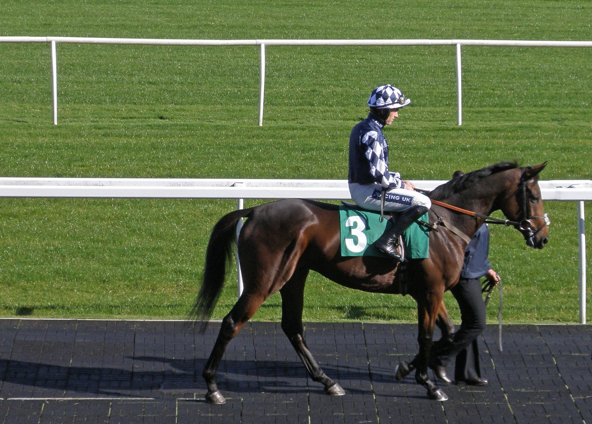

La falta de lluvia deja a Kempton sin su primera jornada de obstáculos
The Jockey Club suspende la reunión inaugural de obstáculos de Kempton por falta de lluvia. La Panoramic Hurdle Race, Listed, se correrá en Carlisle el jueves 22 de octubre.

El terreno no da para correr. Las pistas se riegan sin interrupción desde finales de junio, pero el largo periodo de tiempo seco y las temperaturas altas han impedido conseguir el piso seguro que exigen las carreras de obstáculos. Esa fue la explicación de The Jockey Club en el comunicado que difundió el miércoles por la tarde. La jornada estaba prevista para el domingo de la semana próxima y abría la campaña de invierno en el recinto de Sunbury.
La prueba principal del programa sí se salva. «Aunque lamentamos perder la jornada, nos complace confirmar que la Panoramic Hurdle Race (Class 1) (Listed Race) se trasladará al hipódromo de Carlisle y se disputará con su dotación actual, 50.000 libras, el jueves 22 de octubre», señala la nota. La carrera de vallas conserva así su categoría y su premio, aunque cambia de escenario.
Kempton no es un caso aislado. La semana pasada, el mismo organismo ya había anunciado la suspensión de la reunión inaugural de Exeter, fijada para el próximo jueves. La segunda cita del trazado de Devon, el Best Mate Beginners Chase Day del martes 20 de octubre, tampoco se correrá.
«Por desgracia, no ha habido precipitaciones significativas en las últimas semanas en Exeter Racecourse y, con lluvia insuficiente en las previsiones, es necesario cancelar también la segunda jornada de la temporada», recoge el comunicado.
La lectura es sencilla: el riego no compensa la falta de lluvia, y ya son tres las jornadas de obstáculos perdidas entre los dos hipódromos.
Quienes tenían entrada general para las reuniones suspendidas recibirán el reembolso de forma automática. Los clientes de hospitalidad serán contactados directamente por los equipos de cada hipódromo para concretar las condiciones.
Por Martín Larrañeta